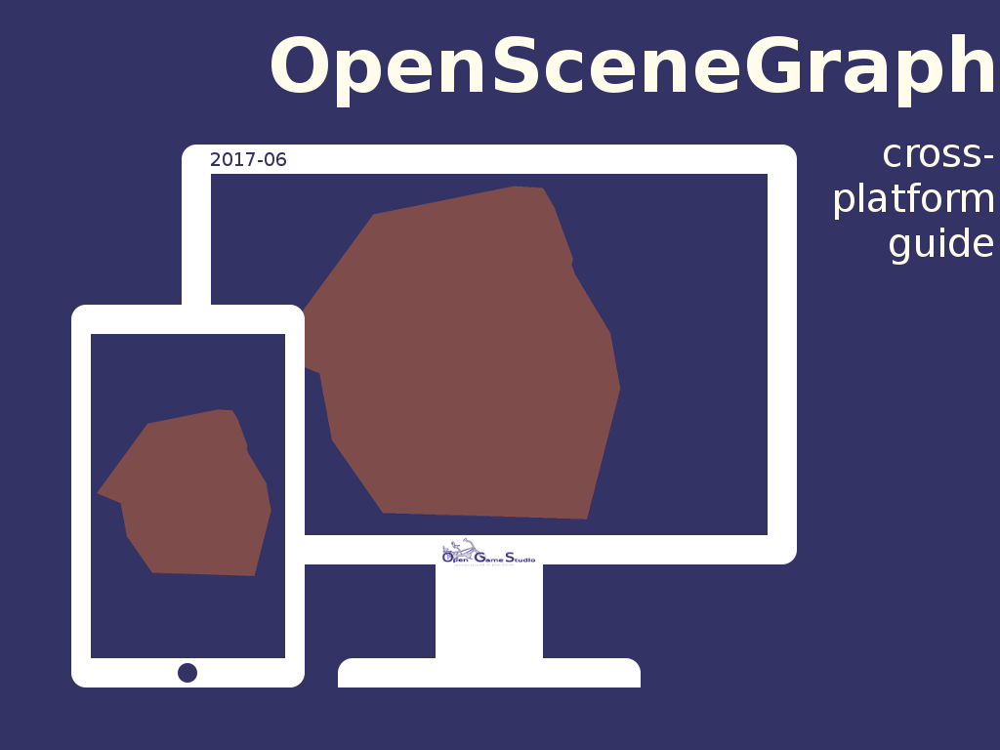

2017-07-17 00:00

This article summarizes the work we did to produce OpenSceneGraph cross-platform guide.
June marked the finish of OpenSceneGraph cross-platform guide with the publishing of the last (initially planned) tutorial. The tutorial describes how to build and run sample OpenSceneGraph application in Web using Emscripten. In case you missed it, here's a link to the final application. Open it in your web browser.
We started to compose the guide in February when we successfully managed to render a simple model on mobile and web. We spent 120 hours in five months to produce ten tutorials of the guide.
We have been doing OpenSceneGraph cross-platform guide for two main reasons:
We believe we succeeded in both. Here's why:
Reaching our goal of researching OpenSceneGraph cross-platform development and providing the knowledge back to the community just made us happier.
However, our journey does not stop here. Using the knowledge of the guide, we now continue to work on bringing our tools to support mobile and web, just as we promised in January.
That's it for summarizing the work we did to produce OpenSceneGraph cross-platform guide.